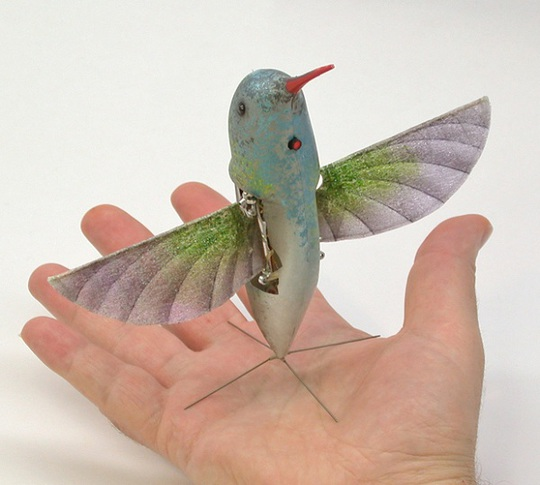

|
During the last WSA conference, the second most important event after the annual "state of the War On Bad People" presentation was that the director of WSA had been assassinated. Because of the crowd and the panic after the incident, the perpetrator could escape. The WSA hasn't been able to determine the identity of the attacker yet, even with the footage from the numerous installed security cameras. A small autonomous flying device was used in the attack (a "hunter-seeker"). The device was homemade and built entirely from plastic (probably to evade metal detectors). Possibly because of design contraints imposed by this, the device could only fly in a straight line with constant speed, and emitted a particular, audible humming. |

source: http://commons.wikimedia.org/wiki/File:Nano_Hummingbird.jpg |
Since there was a microphone installed between the director and the crowd, there is a high quality audio recording of the whole event, including the humming (which was identified as a periodic, fixed frequency signal).
The WSA has a theory that careful evaluation of this record could reveal the exact position of the assassin. The recording is classified Top Secret for the next 80 years; however, the WSA is willing to share an edited version with capable forensics who can first prove their skills on 10 simulated inputs. The inputs are carefully filtered similarly to how the real recording will be (e.g. to remove potentially disturbing sounds that are not directly useful to the task at hand, and to equalize the volume of the humming effect for easier processing).
The room is large and flat, the hunter-seeker flies in a straight horizontal line at an unknown constant speed which is less than the speed of sound. The speed of sound is c=343.2 m/s. The radius of Earth, the gravity, air properties (humidity, friction, etc) can be discarded in such a small room.
Example inputPlease refer to 0.wav. | Example output404.475 |